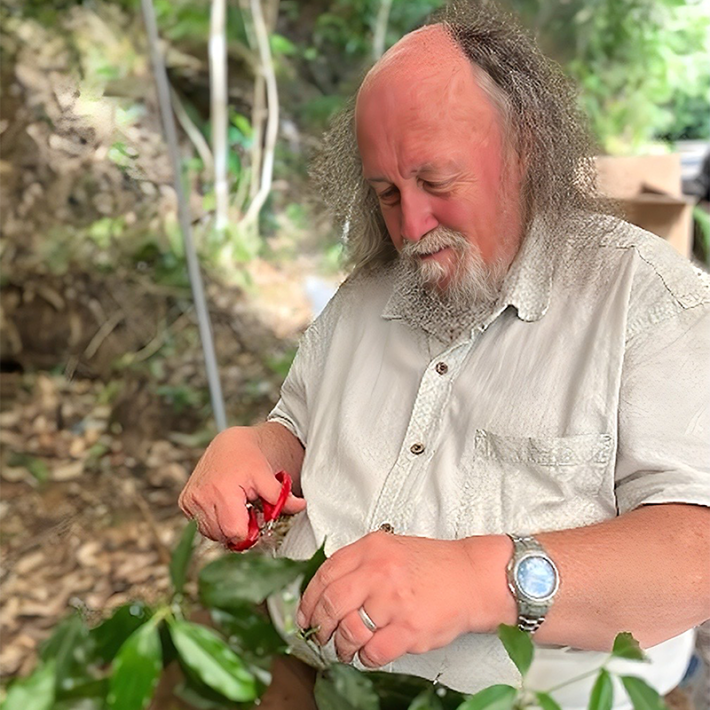

The earliest climate models of the 1960s and ’70s had a bare land surface with no plants. In these models, rain would fall into mathematical “buckets,” then evaporate back into the air, to simulate the water cycle.
Since then, climate models have come a long way in representing forests, grasslands, and other biomes and how they influence the Earth’s water and carbon cycles. But you still might call them a little low-fi. The global climate models of today tend to have only about 10 “functional types” of plants, which approximate how different ecosystems move heat, water, and nutrients—including carbon.
And these plant simulations don’t exactly replicate how responsive flora are to shifts in their environment. That’s because when these models were built, they assumed a stable climate. Now that plants are adapting their photosynthesis to warmer temperatures and increased carbon dioxide, they need new math to represent them in climate models. So one team of researchers created the LEMONTREE project, which is building equations that describe “plant math”: how vegetation optimizes its functions, given a set of climatic variables. (LEMONTREE is short for Land Ecosystem Models based On New Theory, obseRvations, and ExperimEnts.)
Will plant life on Earth thrive with some extra CO2?
The team consists of researchers from around the globe with support from Schmidt Sciences Virtual Earth System Research Institute (VESRI). Their expertise also roams widely, from plant ecology to math to remote sensing. “The idea is that we can simplify the models that we use to predict how plants react to climate and how they’re going to react in the future, and also how they will then influence the climate,” says the project’s lead researcher Sandy Harrison, a professor of paleoclimates and biogeochemical cycles at the University of Reading in England.
Even as global climate models have grown more complex and powerful, plant processes are still their weak spot, says Harrison. For instance, in the Intergovernmental Panel on Climate Change’s reports on climate change, one major area of uncertainty is how vegetation will respond to warmer temperatures and increased carbon dioxide. In some model outputs, plants continue absorbing carbon for many decades into the future, in turn somewhat buffering human emissions. In other models, plants wither in warmer weather, even becoming a net source of CO2 by 2050.
While physicists have built equations that elegantly describe the atmosphere, ocean, and physical landforms, terrestrial life and especially plants present a unique challenge. Unlike physical forces, plants adapt and evolve. Species adjust their growing strategy to make smart use of water, sunlight, and nutrients. That’s why the amount of carbon that plants take up every year varies—while, on average, it’s about a third of all the CO2 emitted, there are stark differences year-to-year as plants respond to the environment.
However, climate models typically include rigid parameters for plant functions. For example, they might prescribe that a pine tree always photosynthesizes most efficiently at 77 degrees Fahrenheit. But these values miss how much plants can flex their functions. “They don’t change during the seasonal cycle or droughts,” says Harrison of hypothetical plants in climate models. “That means that the plants are less responsive to these climatic events than they ought to be.”

SPEAKING IN PLANT:Better understanding the nuances of how plants change their inputs and outputs in response to changes in their environment is helping researchers like Colin Prentice, a LEMONTREE lead researcher and a professor at Imperial College London, better calculate their impact in climate models. Credit: Prentice Lab.
For example, a study last year found that many current climate models underestimate how sensitive plants are to drought. Researchers used satellite data to study how canopies responded during dry periods, and compared this response to existing climate models. The researchers found that vegetation reduced photosynthesis during droughts more strongly than the models predicted.
Small miscalculations like this can add up, leading to misrepresentations of carbon uptake, water evaporation, and more. “Oftentimes, these models were developed using data when maybe it was beautiful and sunny out,” says lead author Julia Green, an environmental science professor at the University of Arizona, who is not currently part of the LEMONTREE team but has previously had research funded by the project. “During extreme conditions, they end up not performing so well.”
The LEMONTREE team wants to solve this problem by rebuilding plant models from the ground up. In particular, they are guided by a theory called “eco-evolutionary optimality.”
“It’s the idea that through evolution, through ecological processes, plants grow where they’re best adapted to grow,” said Harrison. To create new models based on this theory, “we simply have to look for the trade-offs that a plant is making.”
Photosynthesis is one area where plants make these trade-offs. Plants must open their stomata to pull in carbon dioxide to make sugar, but leaving those leaf pores open too long in dry weather can wilt vegetation. If plants risk it and leave their stomata open too long, they will dry out and die. But overly conservative vegetation will be out-competed by plants that take in more carbon and grow faster. Over time, the organisms that find the perfect balance will win out.
For now, plants are slightly increasing their ability to capture carbon.
With this balance in mind, the researchers developed an equation that conveys the trade off between stomatal conductance and photosynthesis. They drafted this equation using remote-sensing data that reported canopy greenness. Then, they tested the equation using CO2 measurements taken at field sites. Through comparisons with field site data, they could test whether the model could correctly predict photosynthetic capacity.
After some adjustments based on comparisons with the observations, the researchers say this single equation for photosynthesis does the work of several more complicated equations in land surface models. “We end up with a model that we can show is substantially more accurate than conventional models, and yet it’s a great deal simpler,” says Colin Prentice, a LEMONTREE lead researcher and a professor at Imperial College London.
The team is also working on other plant-related math equations, such as ones that determine leaf area and the rate of plant respiration across different environments. Instead of relying on pre-defined plant parameters, the equations work out the best “plant math” for a given location, showing how plants are optimizing their growing strategies based on climate. This allows climate modelers to have more flexible—and therefore hopefully more accurate—projections, says Pier Luigi Vidale, a climate scientist with the University of Reading who is on the LEMONTREE team. “We would like to do away with all these parameters that describe what vegetation does, and try to compute those things dynamically.”
An improved mathematical representation of plants in climate models can help answer long-standing questions for ecologists. Importantly: Will plant life on Earth thrive with some extra CO2, or will drier conditions cause vegetation to desiccate? With more CO2 in the air, plants can produce the same amount of food while keeping their stomata open for a shorter period, an effect known as CO2 fertilization. But this benefit extends only as far as plants can have enough moisture and nutrients. With improved vegetation models, “we’re able to look at what’s going to happen when we have both warming and increasing CO2,” says Harrison.
RE-CYCLING:Old climate models struggled to capture the complexity of plants’ dynamic roles in water and carbon cycles of the planet. A new generation of modeling is working to recalibrate based on real data and better math. Credit: linojocaru / Shutterstock.
She says that the new models suggest the effect of recent increases in atmospheric carbon dioxide is fertilization—global vegetation as a whole is greening, which means that, for now, plants are slightly increasing their ability to capture carbon (though not nearly enough to offset ever-increasing human emissions).
But extreme conditions can shift this balance, something LEMONTREE researchers hope their models will better predict. If a drought leads plants to shut their stomata, then they won’t release as much water into the atmosphere, which reduces the moisture going to clouds and rainfall, which in turn could lead to even drier conditions. To predict dramatic feedback effects like this, researchers need to capture the relationship between moisture levels and water conductance in plants. “If we manage to be able to predict the vegetation properly, then we’re going to get better predictions of what the climate might look like,” said Harrison.
Once the equations are finalized, the next step will be seeing how they hold up in larger climate models. Researchers can then see how the outputs perform compared to previous models of terrestrial ecosystems. After the LEMONTREE project wraps up in June 2027, scientists with CONCERTO (which stands for (improved CarbOn cycle represeNtation through multi-sCale models and Earth obseRvation for Terrestrial ecOsystems), a climate modeling effort funded by the European Union, will collaborate with the team on the next steps toward seeing how the atmosphere and land surface interact in simulations that include the new plant math.
“It’s a very helpful way of structuring your model,” says Anna Harper, a professor of geography and atmospheric sciences at the University of Georgia, of the team’s eco-evolutionary optimality approach. Especially since models are still relatively uncertain about terrestrial processes, any improvements are welcome, adds Harper, who is not involved in the LEMONTREE project. “There’s a lot of excitement around anything that can help us better represent the carbon cycle.”
That said, rebooting models with a new set of equations for plants is not straightforward. Today’s climate models are the result of years and years of tuning, where scientists adjust variables when the model output doesn’t line up with observational data. After tuning, the simulations might get the right answer—but for the wrong reasons. So even if the new plant math is more accurate, it might throw off other calculations in the model. “It will just take time, because even if people agree that improvements have been made, you still have to check that it’s not going to have unintended consequences,” says Harper.
While the changes may be messy, the team thinks it will be worth it in the long run. The climate models developed decades ago and are in need of a refresh, says Vidale. “We still really need to develop models and to take big risks, like we’re doing here,” he says. “In the end, even if it’s a huge failure, it was still worth doing it. But the indication so far is that it’s working.” 
Lead image: George Trumpeter / Shutterstock